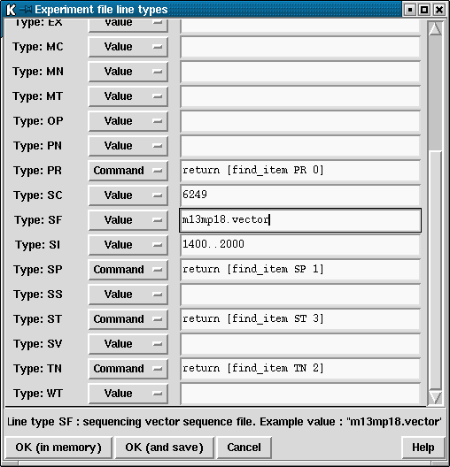

A list of Experiment File line types may be viewed and edited using this option (see section Experiment file format record types). A table of the Experiment File line types is displayed along with their current values. A brief description of the line type underneath the mouse cursor is displayed in the Information Line at the bottom of the window. The table consists of three columns. The first is a label identifying the line being edited. The second column is an option menu from which either Value or Command may be selected. The third column is the current value or command.

Line type values will be used for every sequence. The Augment Experiment Files module will add this line type to each Experiment File. This is suitable for specifying information which is constant across an entire batch, such as insert size (SI) or operator (OP). The Line type commands are executed each time the Augment Experiment Files module adds that line to the Experiment File. Hence the commands are used for information which may change from sequence to sequence. This table should be used for editing line type values, but we do not recommend that you use it for editing commands (although it is useful to know which commands have been set).
In the above example the PR, SP and ST commands were generated using the Simple Text Database interface, whilst the SC and SF values come from the Sequencing Vector Clip module parameters and the SI value was typed in by hand using this table.
The "OK (in memory)" and "OK (and save)" buttons will accept the currently displayed values and commands. The "OK (in memory)" button will use these settings for the current pregap4 runs. The "OK (and save)" button will use them for the current session and all subsequent pregap4 sessions as it saves the information to the pregap4 configuration file.